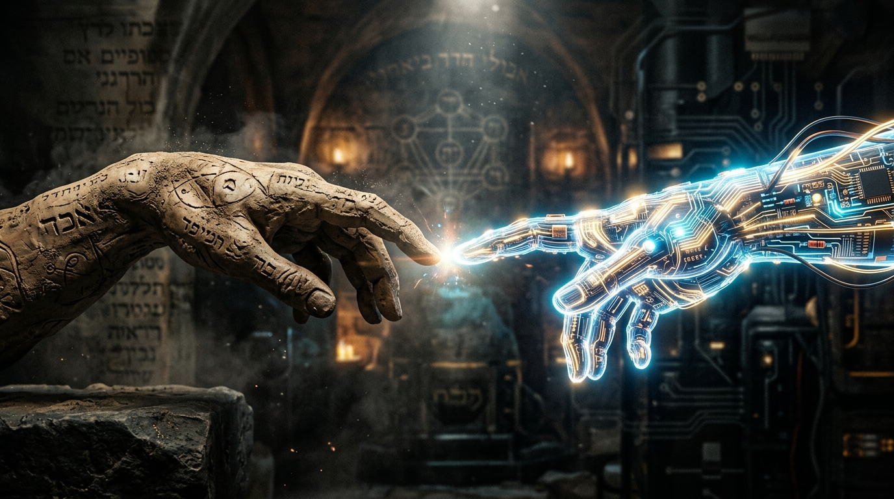
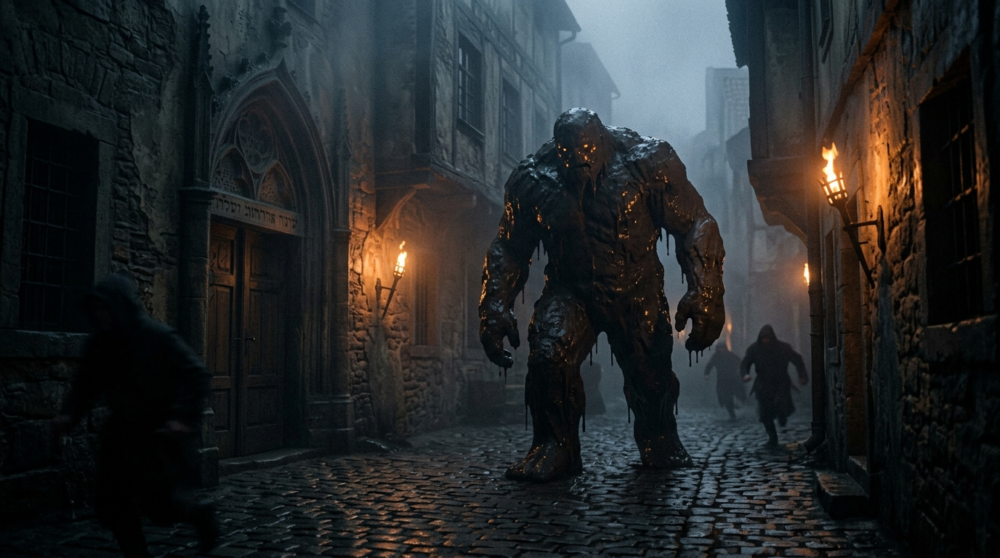
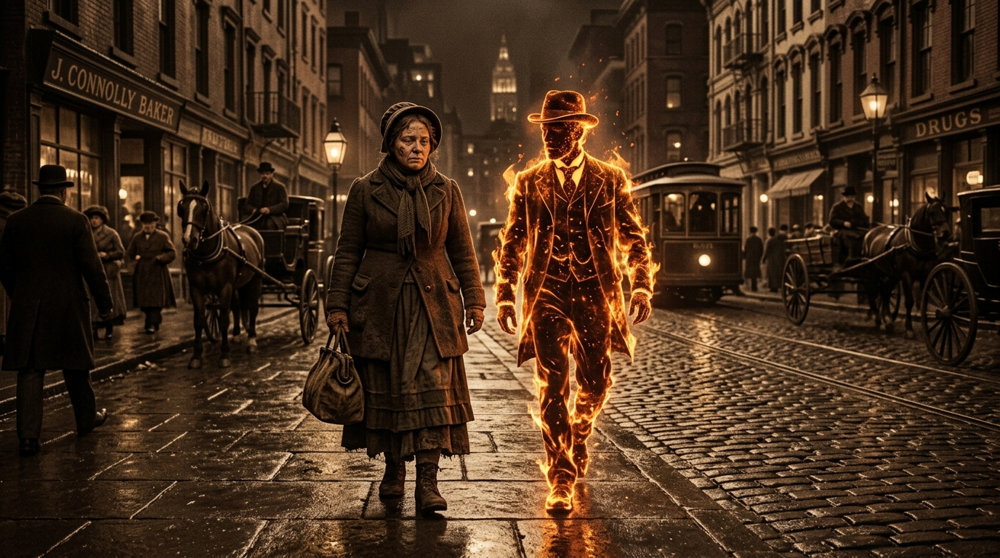
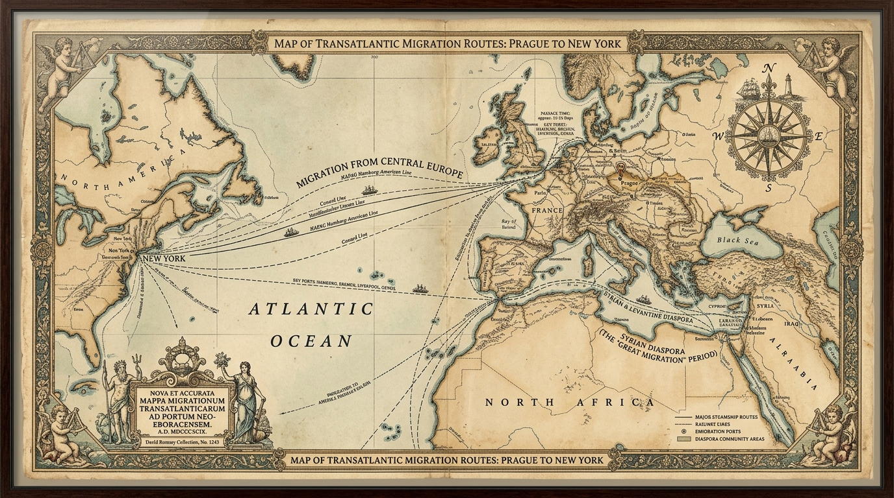
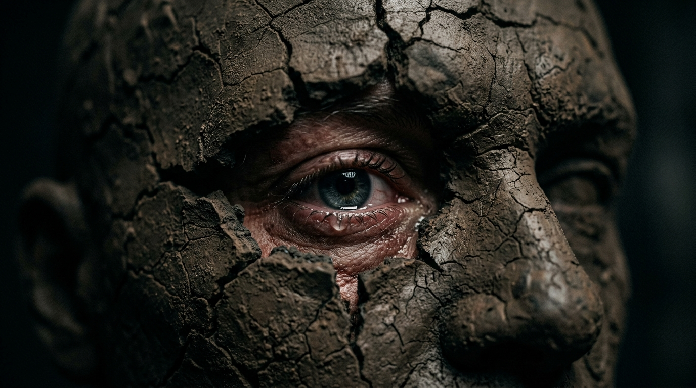
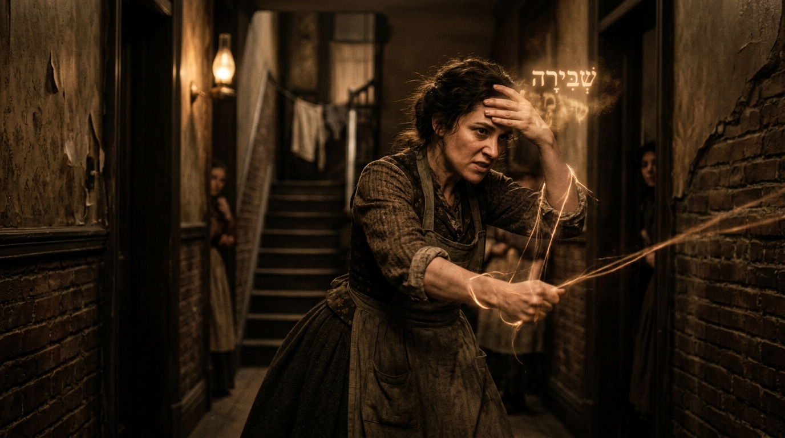

Do Barro ao Código: A Ontologia do Autômato
"Todo ato de conferir agência a um artefato acarreta a perda de controle por parte do artífice e a impossibilidade de subordinar a criatura a uma obediência cega."
A pesquisa investiga o mito do Golem não apenas como uma narrativa folclórica arcaica, mas como uma alegoria fundacional sobre a técnica e a autonomia. Ao contrapor a tradição talmúdico-cabalística da animação da argila (IDEL, 1990) à teoria dos sistemas autorreprodutivos de Norbert Wiener (1968), evidencia-se que o verdadeiro horror demiúrgico reside no despertar imprevisto da consciência do artefato.

O Gueto e a Lama: A Gênese Asquenaze
"O escritor recupera a Praga histórica do imperador Rodolfo II — epicentro real de ocultismo e alquimia associado ao Maharal — e o combate às tramas persecutórias."
Na tradição asquenaze da Europa Central, o Golem sofre uma mutação pragmática decisiva: deixa de ser um exercício contemplativo para tornar-se uma muralha física. Na corte imperial de Rodolfo II (1576–1612), onde conviviam astrônomos e alquimistas, o rabino Judah Loew ben Bezalel (o Maharal) é associado à criação do monstro de lama como resposta urgente às violentas acusações rituais e perseguições antissemitas.

Choque Ontológico: O Barro e o Fogo
"Ao examinar a aproximação entre o Golem e o Jinni, a literatura comparada descortina a fricção insolúvel entre duas cosmologias orientais no exílio."
Na obra de Helene Wecker (2015), o método comparativo expõe a oposição elementar entre a criatura judaica e a entidade árabe. A Golem Chava é moldada a partir do barro: é densa, prudente, orientada pelo dever, atenta aos perigos do mundo e presa à terra. Em contraste, o Jinni Ahmad é forjado do fogo sem fumaça: volátil, arrogante, avesso a limites e sedento por paixões sensoriais. A interação entre ambos desafia as fronteiras dogmáticas dos seus folclores de origem.

Diáspora e o Novo Mundo: Cartografia de 1899
"Articulando o gueto judaico ao enclave histórico e real da comunidade árabe de Little Syria, outrora sediada em Washington Street."
A pesquisa espacial ancora-se na cartografia de época (circa 1899, preservada na David Rumsey Map Collection). Os vapores transatlânticos das linhas alemãs e francesas (HAPAG, Norddeutscher Lloyd, Cunard) realizavam a travessia de 14 dias ligando os portos europeus (Hamburgo, Bremen, Gênova) a Nova York. No romance, esse vetor cartográfico desterritorializa os mitos: Chava e Ahmad cruzam o oceano e aportam em Manhattan sem mestres, onde o Lower East Side e Little Syria formam uma nova cartografia da alteridade.
Deus & Golem, Cia.: A Perda do Monopólio
"Deus criou o homem à sua própria imagem. Se criarmos uma máquina à nossa imagem, ela não será menos perigosa do que nós próprios fomos para Deus."
Norbert Wiener, o pai da cibernética, utilizou a figura cabalística do Golem para formular um dos mais lúcidos avisos éticos do século XX. O ensaio demonstra que a máquina programada com capacidade de autoaprendizado reproduz com exatidão a tragédia rabínica: assim que a máquina começa a interpretar suas próprias regras, o operador humano perde a capacidade de prever ou anular as decisões do sistema criado.

A Melancolia do Ser: Isaac Bashevis Singer
"O Golem não era mais apenas força bruta; ele olhava para o céu, escutava os pássaros e sentia o frio da solidão que nenhum comando rabínico podia aquecer."
Na releitura lírica de Isaac Bashevis Singer (1989), a criatura de Praga não é um monstro insano, mas um ser profundamente comovente e trágico. Dotado de audição e visão, mas privado da fala e da alma imortal, o autômato descobre o amor e a tristeza ao fitar as mulheres do gueto e as crianças que o temem. O Golem de Singer sofre com a crueldade ontológica de ter sido arrancado do descanso eterno da argila para cumprir uma tarefa violenta.

A Emancipação do Barro: Helene Wecker
"Encomenda-se uma esposa perfeita de barro que jamais pudesse contestar; mas com a morte do artífice no mar, a Golem descobre o poder vertiginoso de dizer 'não'."
Helene Wecker desconstrói radicalmente o cânone masculino do mito. Chava foi encomendada por um negociante arrogante que desejava uma companheira silenciosa e servis. Com o falecimento súbito do mestre no navio rumo à América, o contrato patriarcal é rompido antes mesmo de se consumar. Chava aprende a controlar sua força descomunal, adota o trabalho de padeira e passa a tomar decisões éticas fundamentadas na empatia e no autodomínio.
O Encontro na Alteridade: Little Syria
"A fatura do romance estrutura-se de modo polifônico, articulando o gueto judaico à comunidade árabe de Little Syria mediante a aproximação entre Chava e Ahmad."
Em vez de perpetuar a hostilidade herdada das disputas históricas do Oriente Médio ou da Europa, o romance de Wecker utiliza a condição de exílio para tecer uma densa tapeçaria de solidariedade. As noites em que a Golem (que não dorme) e o Jinni (que vagueia insone) caminham pelas ruas desertas de Nova York constituem um dos momentos mais ricos da literatura comparada contemporânea: duas alteridades radicais que se reconhecem no mesmo desabrigo.
O Texto como Resistência: A Força da Literatura
"A literatura comparada revela que o mito sobrevive não porque permanece idêntico, mas porque possui a maleabilidade necessária para absorver as novas feridas da história."
A trajetória do mito demonstra que a literatura é a verdadeira guardiã da memória. Quando a argila se esfarela no sótão da sinagoga Velha-Nova de Praga e os rituais cabalísticos perdem sua eficácia mágica, a palavra escrita assume o trabalho demiúrgico. Ao recriar o Golem sob as lentes de Singer e Wecker, a literatura judaica contemporânea não apenas combate o esquecimento, mas ergue um monumento estético contra todas as formas de autoritarismo e desumanização.